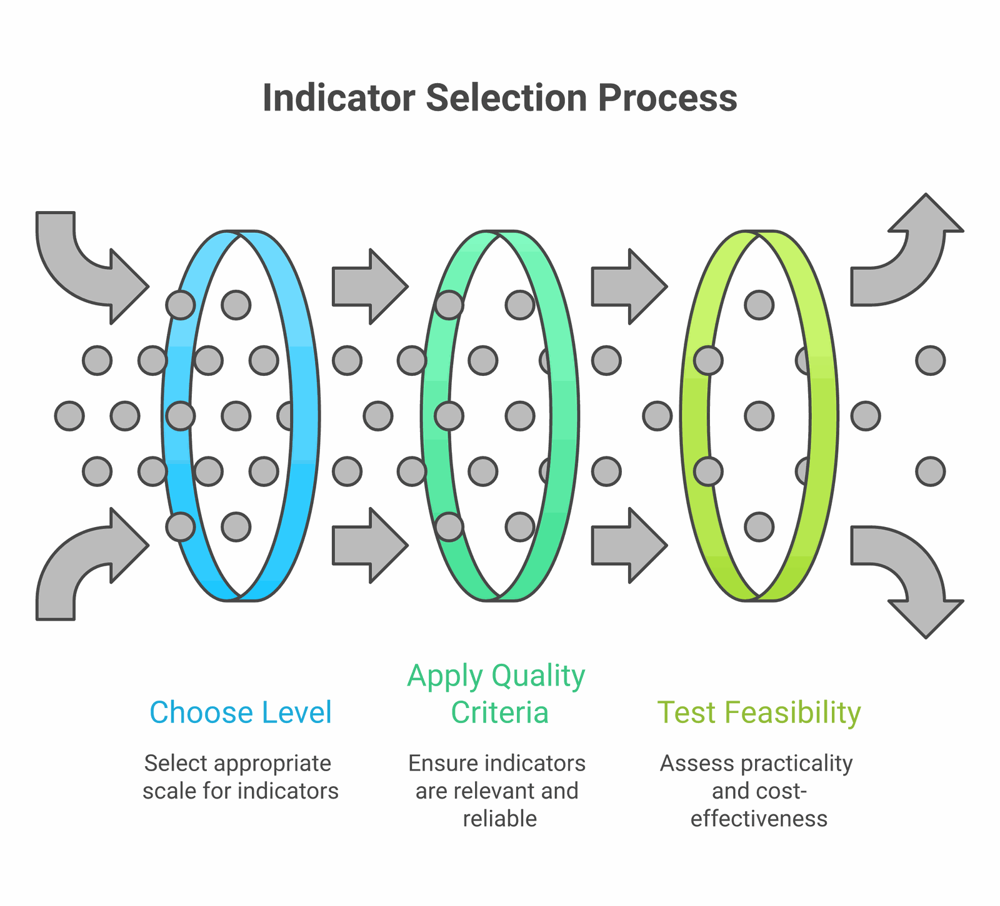

Every development professional has encountered them: indicators that look impressive in a report but reveal nothing about whether lives are actually changing. The number of trainings conducted, the number of brochures distributed, the number of meetings held. These vanity metrics persist across the sector because they are easy to count, comfortable to report, and rarely challenged by donors who are themselves under pressure to show results.
But what if we designed our measurement systems around what actually matters? What if we started from the question "what change do we want to see in people's lives?" and worked backwards to figure out how to measure it? This article explores how to move beyond vanity metrics toward indicators that genuinely capture the changes development programmes seek to create, with practical examples drawn from across South Asia.
The Anatomy of a Vanity Metric
A vanity metric is any measurement that makes a programme look good without actually telling you whether it is achieving its intended purpose. Consider a maternal health programme in rural Bihar that reports "500 women attended health awareness sessions." This sounds impressive — but it tells us nothing about whether those women changed their health-seeking behaviour, whether they accessed antenatal care, or whether maternal mortality rates shifted in the target area.
Vanity metrics share several characteristics. They tend to measure activities rather than outcomes. They count outputs (things the programme produced) rather than changes in the lives of participants. They are almost always within the direct control of the implementing organisation, which means they measure effort rather than effect. And critically, they can always go up without anything meaningful actually changing.
The development sector's addiction to vanity metrics is not merely a technical problem — it is a structural one. Donor reporting cycles reward organisations that can show neat, upward-trending numbers. Log frames designed at proposal stage lock teams into measuring what was promised rather than what matters. And field teams, already overburdened, gravitate toward indicators that are easiest to collect. The realities of data quality in the field only compound these pressures.

SMART vs CREAM: Two Frameworks for Better Indicators
The most widely taught framework for indicator design is SMART: Specific, Measurable, Achievable, Relevant, and Time-bound. The acronym traces back to a 1981 Management Review article by consultant George T. Doran, "There's a S.M.A.R.T. Way to Write Management's Goals and Objectives" — where, notably, the "A" originally stood for "Assignable" and the "R" for "Realistic." Most MEL professionals can recite some version of this acronym in their sleep. But SMART has limitations. It focuses primarily on whether an indicator is technically well-constructed, without asking deeper questions about whether it captures meaningful change.
The CREAM framework offers a useful complement. Set out by Jody Zall Kusek and Ray Rist in the World Bank's widely used handbook Ten Steps to a Results-Based Monitoring and Evaluation System (2004), CREAM stands for Clear, Relevant, Economic, Adequate, and Monitorable. Where SMART focuses on technical precision, CREAM adds practical considerations. "Economic" asks whether the indicator can be measured at reasonable cost — a critical question in resource-constrained South Asian contexts where data collection budgets are often the first line item to be cut. "Adequate" asks whether the indicator provides sufficient information to assess performance, pushing back against the tendency to rely on a single proxy measure.
In practice, the best indicators satisfy both frameworks. Consider a women's economic empowerment programme in Bangladesh. A SMART-only indicator might be "percentage of women participants who report earning income from a new livelihood activity within 12 months." This is specific, measurable, achievable, relevant, and time-bound. But applying CREAM reveals gaps: is self-reported income adequate to capture economic empowerment? Is it economic to verify income claims? A CREAM-enhanced version might add complementary indicators around decision-making power within households, drawing on a validated instrument such as IFPRI's Women's Empowerment in Agriculture Index (WEAI), which since 2012 has measured sole and joint decision-making over production, resources, income, leadership and time, and has been adapted for South Asian contexts.
Output, Outcome, Impact: The Critical Distinctions
Perhaps the most important conceptual distinction in indicator design is between outputs, outcomes, and impact. These terms are used constantly in the development sector, yet they are frequently confused — and that confusion leads directly to poor measurement.
Outputs are the direct products of programme activities. They are what the programme delivers: training sessions conducted, wells constructed, textbooks distributed, health workers trained. Outputs are necessary but never sufficient. A programme can deliver all its planned outputs and still fail to create any meaningful change.
Outcomes are the changes in behaviour, knowledge, attitudes, or practices that result from programme outputs. When a farmer who received agricultural training actually adopts improved cultivation techniques, that is an outcome. When a girl who received a bicycle to travel to school actually improves her attendance, that is an outcome. Outcomes require something to change in the lives of participants — they cannot be achieved by the programme alone.
Impact refers to the long-term, systemic changes that the programme contributes to. Reduced poverty rates, improved nutritional status across a district, shifts in gender norms at a population level. The OECD-DAC evaluation criteria — the field's most widely adopted framework, revised in 2019 to add "coherence" alongside relevance, effectiveness, efficiency, impact and sustainability — deliberately frame impact in terms of an intervention's higher-level effects rather than its outputs. Impact is almost never attributable to a single programme, which is precisely why many organisations avoid measuring it. But failing to even articulate what impact you are working toward means you have no compass for your work.
The most dangerous indicator is one that tells you exactly what you want to hear while hiding everything you need to know.
Practical Indicator Design for South Asian Contexts
South Asia presents specific challenges and opportunities for indicator design. High linguistic diversity means that survey instruments must be carefully translated and back-translated, with indicators that work conceptually across languages. Seasonal migration patterns in states like Odisha, Jharkhand, and Chhattisgarh mean that indicators requiring longitudinal tracking of the same individuals must account for mobility. Joint family structures mean that individual-level indicators of economic empowerment may miss important household dynamics.
Consider a sanitation programme in rural Madhya Pradesh. A common output indicator is "number of toilets constructed." A better outcome indicator is "percentage of households practising open defecation-free behaviour six months after toilet construction." But even this misses crucial dimensions. Who in the household uses the toilet? Is it maintained? Is the water supply sufficient for regular use? Effective indicator design in this context requires understanding the social dynamics of sanitation behaviour, including caste-based stigma around cleaning toilets, gender differences in sanitation access, and seasonal water availability.
Self-Help Groups (SHGs) across India offer another instructive example. Many programmes track "number of SHGs formed" and "amount of savings mobilised." These are useful output indicators, but they tell us nothing about whether the groups are functional, whether they are actually empowering women, or whether they are sustainable beyond the project period. More meaningful indicators might include: regularity of meetings without external facilitation, diversity of loan purposes beyond consumption smoothing, and evidence of collective action on community issues beyond microfinance.

Common Pitfalls and How to Avoid Them
Several recurring mistakes plague indicator design across the development sector. The first is indicator proliferation — programmes that try to measure everything end up measuring nothing well. A single project log frame with 47 indicators—try building one with the Logframe Builder to see how quickly complexity escalates—as one reviewer found in a multi-state nutrition programme, means that data collection becomes the primary activity of field staff, leaving little time for actual programme delivery.
The second pitfall is proxy over-reliance. Proxies are necessary — we often cannot measure what we truly care about directly. But when the proxy becomes disconnected from the underlying concept, we lose sight of what we are actually trying to understand. This is the heart of Goodhart's law — named for economist Charles Goodhart and crisply restated by anthropologist Marilyn Strathern in 1997 as "when a measure becomes a target, it ceases to be a good measure." School enrollment is a textbook case: in rural India, the ASER survey has found enrollment of 6–14 year-olds above 95% even as only around half of Grade 5 children can read a Grade 2-level text (ASER Centre / Pratham). The proxy looks excellent while the outcome it stands in for stagnates — yet enrollment persists as an indicator because it is easier to count than learning.
The third pitfall is ignoring unintended consequences. Good indicator frameworks include space for monitoring unexpected effects, both positive and negative. The relationship between women's income and intimate partner violence is a useful caution here: a World Bank Research Observer review by Buller and colleagues found that most studies of cash transfers report reductions in intimate partner violence, but a minority show mixed or adverse effects depending on programme design (Buller et al., 2018). The direction is not automatic — which is precisely why a livelihood programme needs indicators that can detect either outcome rather than assuming income gains are uniformly benign. Without indicators that capture these possibilities, programmes can cause harm while appearing successful on paper.
Five Questions to Test Your Indicators
Before finalising any indicator, ask: (1) If this indicator improves, does it necessarily mean people's lives are better? (2) Could this indicator look good while the programme is actually failing? (3) Can we realistically collect this data with available resources? (4) Does this indicator capture change that matters to the communities we serve? (5) Will this indicator help us make better programme decisions, or is it only for the donor report?
Moving Forward: Indicators as Learning Tools
The ultimate purpose of indicators is not to populate reports or satisfy donors — it is to help us learn and improve. When indicators are designed well, they function as an early warning system, telling programme teams when something is working and when it is not, in time to make adjustments. The stories in data-driven decisions illustrate exactly what becomes possible when good indicators meet organisational courage. They serve as a bridge between communities and decision-makers, translating lived experience into evidence that can influence resource allocation and policy.
The shift from vanity metrics to meaningful indicators requires courage. It means accepting that some of your programmes may not look as successful as you thought. It means investing in data collection systems that go beyond counting activities. And it means engaging communities in defining what success looks like—the core principle behind participatory MEL—rather than imposing externally designed measurement frameworks. For the development sector in South Asia, where the stakes are high and the resources finite, getting indicators right is not a technical nicety — it is an ethical imperative.